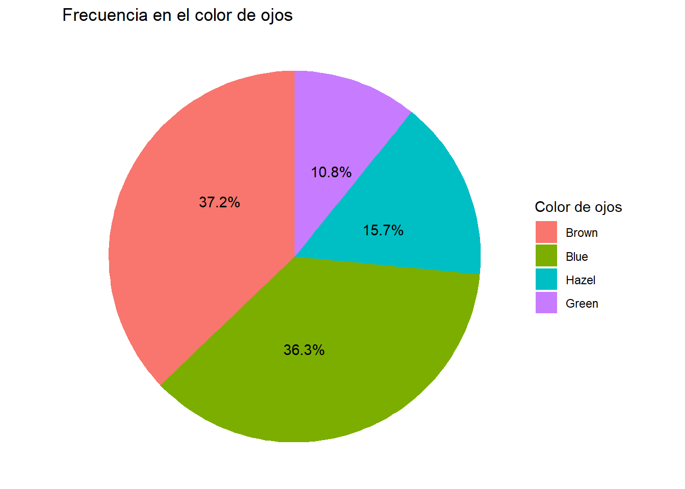

library ("tidyverse")
library ("plotly")
library ("DT")
library ("scales")
library ("hrbrthemes")
library ("ggthemes")
data ("airquality")
data("HairEyeColor")Actividad N°2- Programación en R
Curso PF 0953-01
Utilización de las herramientas Tidyverse y Plotly para graficar datos
Paquetes utilizados
Gráfico de datos
Gráfico de dispersión con el paquete de datos airquality
# Gráfico de dispersión de Ozono y Temperatura
grafico_dispersion <-
airquality |>
ggplot(aes(x = Temp , y = Ozone, color = Month)) +
geom_point(
aes(
text = paste0(
"Temperatura F° ", Temp, "\n",
"Ozono (ppb) ", Ozone
)
)) +
scale_x_continuous(labels = comma, limits = c(50, NA))+
scale_y_continuous(labels = comma, limits = c(0, NA)) +
ggtitle("Cantidades de ozono vs Temperatura ") +
xlab("Temperatura (F°)") +
ylab("Cantidades de ozono (ppb)") +
labs(caption = "Fuentes: paquetes de datos R",
color = "Mes") +
labs(color = "Mes del año") +
theme_ipsum_ps() # estilo de hrbrthemes
# Gráfico plotly
ggplotly(grafico_dispersion, tooltip = "text") |>
config(locale = 'es') # para mostrar los controles en español- Análisis de gráfico de dispersión de Temperatura (F) y Ozono (U.D)
Se observa una relación lineal entre ambas variables, ya que a medida que aumenta la temperatura, se ve una mayor concentración de ozono.

Gráfico de barras con el paquete de datos HairEyeColor
# Convertir HairEyeColor a data.frame
hair_eye_df <- as.data.frame(HairEyeColor)
# Gráfico de barras con conteo de personas según color de pelo
barras_ggplot2_haireyecolor <-
hair_eye_df |>
ggplot(aes(x = fct_infreq(Hair), y = Freq)) +
geom_bar(
stat = "identity",
aes(
text = paste0(
"Color de pelo: ", Hair, "\n",
"Cantidad: ", Freq
)
),
fill = "bisque3"
) +
ggtitle("Cantidad de personas según color de pelo") +
xlab("Color de pelo") +
ylab("Número de personas") +
labs(caption = "Fuente: paquete de datos R") +
theme_ipsum_ps()
# Gráfico de barras interactivo con plotly
ggplotly(barras_ggplot2_haireyecolor, tooltip = "text") |>
config(locale = 'es')- Gráfico de barras sobre la frecuencia de personas según su color de pelo
Se observa que la mayor frecuencia está concentrada (por amplia mayoría) en personas con color de pelo café, seguido por el color rubio (aunque es amplia, también, la diferencia entre ambos)

Grafico de pastel- Porcentaje de color de ojos
#| label: pastel_haireyecolor
#| message: false
#| warning: false
# Agrupar y resumir los datos por color de ojos
cantidad_color_ojos <- hair_eye_df |>
group_by(Eye) |>
summarise(Eye_total = sum(Freq)) # Sumar la columna Freq, que representa las frecuencias
# Calcular porcentajes
porcentaje_color_ojos <- cantidad_color_ojos |>
mutate(Eye_Per = round(Eye_total / sum(Eye_total) * 100, 1)) # Calcular porcentaje
# Gráfico de pastel
pastel_colorojos <-
ggplot(porcentaje_color_ojos, aes(x = "", y = Eye_total, fill = Eye)) +
geom_bar(width = 1, stat = "identity") +
coord_polar(theta = "y") +
geom_text(
aes(label = paste0(Eye_Per, "%")),
position = position_stack(vjust = 0.6),
color = "black"
) +
labs(title = "Frecuencia en el color de ojos",
x = NULL,
y = NULL,
fill = "Color de ojos" ) +
theme_void()
# Despliegue del gráfico
pastel_colorojos
- Gráfico pie sobre la frecuencia de personas según su color de ojos
La mayor proporción de los datos se concentra entre los colores café y azul, estando bastante equiparados. El tercer lugar lo ocupan las personas con colores miel, aunque con amplia diferencia con los primeros dos, y por último la cantidad de personas con ojos color verde.
Histograma de Temperatura
#| label: histograma_temperatura
#| message: false
#| warning: false
# Histograma ggplot2 de distribución de la temperatura
histograma_temp <-
airquality |>
ggplot(aes(x = Temp)) +
geom_histogram(
aes(
y = after_stat(count), # Frecuencia en el eje Y
),
bins = 6,
fill = "#FF7F50",
color = "#8B3E2F"
) +
scale_x_continuous(labels = comma, limits = c(45, NA)) +
coord_cartesian(ylim = c(0, 100)) +
ggtitle("Distribución de temperatura") +
xlab("Temperatura (F°)") +
ylab("Cantidad de días") +
labs(subtitle = "Junio-Septiembre", caption = "Fuente: paquete de datos R") +
theme_ipsum_ps()
# Histograma plotly
ggplotly(histograma_temp, tooltip = "x+y") |>
config(locale = 'es')- Histogramas de distribución de temperatura según cantidad de días
Según este gráfico, de una muestra de 35 días, existe una mayoría de días con temperaturas alrededor de los 80°F (se podría decir entre 75°F y 85°F).